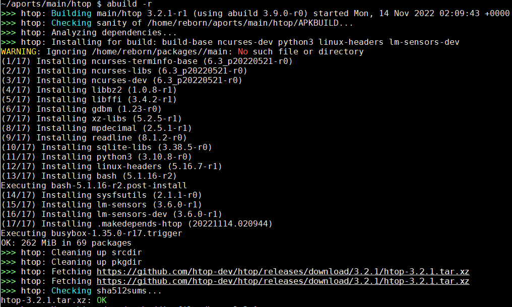
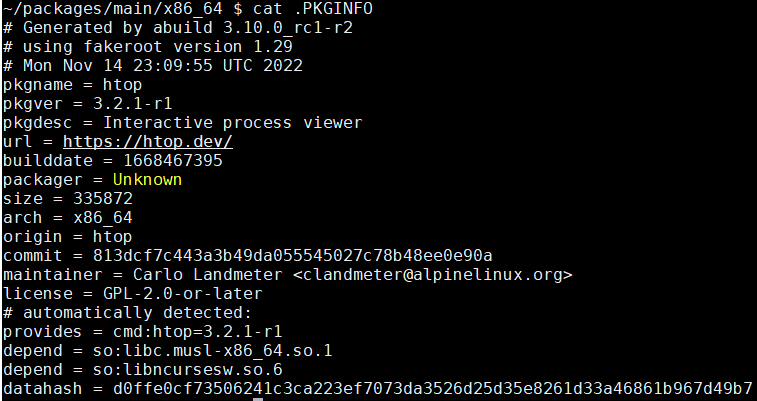
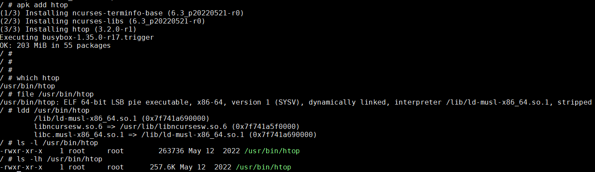
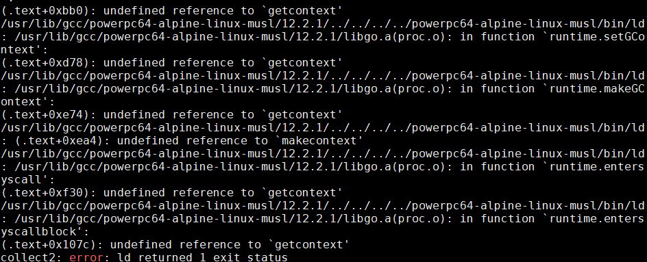
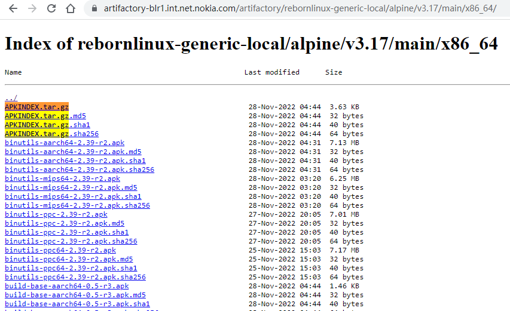
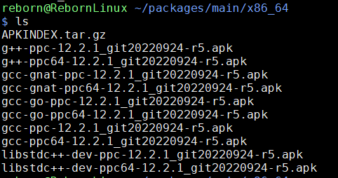

- 现代化的工程系统
- 使用subgroup来组织repo
- 组织清爽, 源代码干净
- 发布周期
- aports
- openrc
- musl libc
- 编译htop实例
- packages
- abuild
- apk使用
- repository 维护
- APKBUILD 文件
1. 现代化的工程系统
alpine linux的全部开发都在
https://gitlab.alpinelinux.org/alpine
mirror: https://git.alpinelinux.org/
- 自己搭建的gitlab服务器, 允许外部用户注册, fork库, 并提交MR
- 使用gitlab-ci的CI/CD做build test
- 用gitlab issue来跟踪bug
- 文档也是repo管理, 使用Antora Playbook发布, 网页入口是 https://alpinelinux.org/
2. 使用subgroup来组织repo
比如CI/CD工具库在alpine/infra/docker/alpine-gitlab-ci下面, 先是根alpine, 再是infra, 再是docker, 最后是repo
3. 组织清爽, 源代码干净
比如alpine-gitlab-ci/-/blob/master/overlay/usr/local/bin/build.sh里面的shell 输出代码:
: "${CI_ALPINE_BUILD_OFFSET:=0}"
: "${CI_ALPINE_BUILD_LIMIT:=9999}"
msg() {
local color=${2:-green}
case "$color" in
red) color="31";;
green) color="32";;
yellow) color="33";;
blue) color="34";;
*) color="32";;
esac
printf "\033[1;%sm>>>\033[1;0m %s\n" "$color" "$1" | xargs >&2
}
verbose() {
echo "> " "$@"
# shellcheck disable=SC2068
$@
}
debugging() {
[ -n "$CI_DEBUG_BUILD" ]
}
debug() {
if debugging; then
verbose "$@"
fi
}
die() {
msg "$1" red
exit 1
}
capture_stderr() {
"$@" 2>&1
}
report() {
report=$1
reportsdir=$APORTSDIR/logs/
mkdir -p "$reportsdir"
tee -a "$reportsdir/$report.log"
}
4. 发布周期
一年两个大版本, 通常在5月和11月发布. 每个版本维护2年.
5. aports
alpine支持的package都放在aports这个库下面.
- main: alpine core team直接支持的package
- community: 由社区支持的package
因为aports下面的package非常多, 用gitlab网页浏览会非常慢. 用这个简单的git网页会快
参考: https://wiki.alpinelinux.org/wiki/Repositories
/etc/apk/repositories是package的配置
/ # cat /etc/apk/repositories
https://dl-cdn.alpinelinux.org/alpine/v3.15/main
https://dl-cdn.alpinelinux.org/alpine/v3.15/community
比如https://dl-cdn.alpinelinux.org/alpine/v3.15/main目录下包括了所有arch的预编译好的apk
点进去看这些apk的修改时间是不一样的, 说明apk是按需编译的.
5.1. 交叉编译
似乎可以用bootstrap.sh来生成交叉编译的工具链
参考: musl-cross-make
5.1.1. 交叉编译概念
在交叉编译中, 经常会出现--build, --host, --target概念.
--build: 在哪编译--host: 编译后的程序在哪运行--target: 编译后的程序可以处理的arch
比如一般build就是x86_64服务器, 要编译gcc, 这个gcc也在x86_64上跑, 但要产生arm指令集:
--build: x86_64--host: x86_64--target: arm
再比如在x86_64服务器编译htop, 这个htop在arm上跑
--build: x86_64--host: arm--target: 不需要
参考:
- https://sites.google.com/site/readliner/study/host-target-build
- https://gcc.gnu.org/onlinedocs/gccint/Configure-Terms.html
- https://www.gnu.org/software/autoconf/manual/autoconf-2.69/html_node/Hosts-and-Cross_002dCompilation.html
The configure and build process has a long and colorful history, and can be confusing to anyone who doesn’t know why things are the way they are. While there are other documents which describe the configuration process in detail, here are a few things that everyone working on GCC should know.
There are three system names that the build knows about: the machine you are building on (build), the machine that you are building for (host), and the machine that GCC will produce code for (target). When you configure GCC, you specify these with --build=, --host=, and --target=.
Specifying the host without specifying the build should be avoided, as configure may (and once did) assume that the host you specify is also the build, which may not be true.
If build, host, and target are all the same, this is called a native. If build and host are the same but target is different, this is called a cross. If build, host, and target are all different this is called a canadian (for obscure reasons dealing with Canada’s political party and the background of the person working on the build at that time). If host and target are the same, but build is different, you are using a cross-compiler to build a native for a different system. Some people call this a host-x-host, crossed native, or cross-built native. If build and target are the same, but host is different, you are using a cross compiler to build a cross compiler that produces code for the machine you’re building on. This is rare, so there is no common way of describing it. There is a proposal to call this a crossback.
If build and host are the same, the GCC you are building will also be used to build the target libraries (like libstdc++). If build and host are different, you must have already built and installed a cross compiler that will be used to build the target libraries (if you configured with --target=foo-bar, this compiler will be called foo-bar-gcc).
In the case of target libraries, the machine you’re building for is the machine you specified with --target. So, build is the machine you’re building on (no change there), host is the machine you’re building for (the target libraries are built for the target, so host is the target you specified), and target doesn’t apply (because you’re not building a compiler, you’re building libraries). The configure/make process will adjust these variables as needed. It also sets $with_cross_host to the original --host value in case you need it.
The libiberty support library is built up to three times: once for the host, once for the target (even if they are the same), and once for the build if build and host are different. This allows it to be used by all programs which are generated in the course of the build process.
5.1.2. alpine中的不同arch
原始代码在abuild/functions.sh.in
安装在:
/usr/share/abuild/functions.sh
arch_to_hostspec() {
case "$1" in
aarch64) echo "aarch64-alpine-linux-musl" ;;
armel) echo "armv5-alpine-linux-musleabi" ;;
armhf) echo "armv6-alpine-linux-musleabihf" ;;
armv7) echo "armv7-alpine-linux-musleabihf" ;;
loongarch32) echo "loongarch32-alpine-linux-musl" ;;
loongarchx32) echo "loongarchx32-alpine-linux-musl" ;;
loongarch64) echo "loongarch64-alpine-linux-musl" ;;
mips) echo "mips-alpine-linux-musl" ;;
mips64) echo "mips64-alpine-linux-musl" ;;
mipsel) echo "mipsel-alpine-linux-musl" ;;
mips64el) echo "mips64el-alpine-linux-musl" ;;
ppc) echo "powerpc-alpine-linux-musl" ;;
ppc64) echo "powerpc64-alpine-linux-musl" ;;
ppc64le) echo "powerpc64le-alpine-linux-musl" ;;
riscv32) echo "riscv32-alpine-linux-musl" ;;
riscv64) echo "riscv64-alpine-linux-musl" ;;
s390x) echo "s390x-alpine-linux-musl" ;;
x86) echo "i586-alpine-linux-musl" ;;
x86_64) echo "x86_64-alpine-linux-musl" ;;
*) echo "unknown" ;;
esac
}
大概看了一下/usr/share/abuild/functions.sh
- CBUILD从
apk --print-arch而来, 检测当前的系统 - CHOST默认为CBUILD, 除非环境变量指定
- CTARGET默认为CHOST, 除非环境变量指定
- CARCH从CHOST而来
[ -z "$CBUILD" ] && CBUILD="$(${APK:-apk} --print-arch 2>/dev/null || :)"
[ -z "$CHOST" ] && CHOST="$CBUILD"
[ -z "$CTARGET" ] && CTARGET="$CHOST"
[ -z "$CARCH" ] && CARCH="$(hostspec_to_arch $CHOST)"
和autoconf手册中说的一致:
The relationship between build, host, and target have been cleaned up: the chain of default is now simply: target defaults to host, host to build, and build to the result of config.guess.
5.1.3. 结论
比如我要在x86_64机器上, 交叉编译出一个ppc的编译器, 该编译器在x86_64运行, 但产生ppc的指令集.
- CBUILD不用指定, 这里是x86_64
- CHOST很重要, 决定了目标apk会被安装到哪个arch
- 如果是编译gcc, CHOST就是x86_64, CTARGET是ppc
- 如果是编译普通包, 比如musl或者libucontext, CHOST是ppc, CTARGET无意义.
5.2. CHOST在alpine中的应用
比如libucontext这个包, 在~/aports/main/libucontext下
如果直接abuild -r, 会编译出libucontext-1.2-r0.apk, 放在~/packages/main/x86_64/下面
我在系统上已经编译了ppc的交叉工具链, 则
如果CHOST=ppc abuild -r, 则会交叉编译出libucontext-1.2-r0.apk, 放在~/packages/main/ppc/下面
但我的系统没有mips交叉工具链, 会提示出错:
如果CHOST=mips abuild -r, 会提示build-base-mips (no such package)
结论:
在有相应交叉工具链的情况下, 用CHOST=xxx可以交叉编译package, 并放到对应的~/packages/main/arch下面.
6. openrc
alpine使用openrc
https://wiki.alpinelinux.org/wiki/OpenRC
7. musl libc
alpine使用musl libc, 我看好musl的轻量简洁.
几种libc的比较
8. 编译htop实例
参考: https://wiki.alpinelinux.org/wiki/Creating_an_Alpine_package
alpine通过aports库管理package, 通过abuild来编译package. 编译也是在一个alpine系统下进行的.
下面我使用docker方式先在x86_64上启动alpine, 然后在里面配置编译环境, 再以编译htop为例, 先梳理一下alpine编译包的过程.
8.1. 准备alpine编译环境
很简单, 先运行alpine容器:
docker run -it alpine
8.1.1. 安装alpine-sdk
apk add alpine-sdk
alpine-sdk是最基础的编译系统, 包括基础库, musl c库, gcc, make等非常基础的工具.
8.1.2. 准备普通用户
alpine默认是root登陆的, 但后面的abuild必须用普通用户来执行. 这里我使用doas来替代sudo, 因为doas包更小, 更符合alpine的理念.
apk add alpine-sdk
apk add doas
ln -s /usr/bin/doas /usr/bin/sudo
echo "permit persist :wheel" >> /etc/doas.d/doas.conf
adduser -g "reborn" reborn
passwd: platform
addgroup reborn wheel
addgroup reborn abuild
切换到普通用户
su reborn
cd ~
abuild-keygen -a -i
cat /etc/abuild.conf
cat ~/.abuild/abuild.conf
8.2. 命令汇总
docker run -it alpine:edge
#使用稳定版本
docker run -it alpine:3.17
# 好像wget只认小写的proxy
#export http_proxy=http://10.158.100.9:8080
export http_proxy=http://10.158.100.6:8080
export https_proxy=$http_proxy
export HTTP_PROXY=$http_proxy
export HTTPS_PROXY=$http_proxy
apk update
apk upgrade
apk add alpine-sdk
apk add doas
ln -s /usr/bin/doas /usr/bin/sudo
echo "permit persist :wheel" >> /etc/doas.d/doas.conf
# passwd: platform
adduser -g "reborn" reborn
addgroup reborn wheel
addgroup reborn abuild
su reborn
cd ~
abuild-keygen -a -i
# cat /etc/abuild.conf
# cat ~/.abuild/abuild.conf
git config --global user.name "Bai Yingjie"
git config --global user.email "yingjie.bai@nokia-sbell.com"
#git clone https://gitlab.alpinelinux.org/alpine/aports --depth=1
git clone https://gitlabe1.ext.net.nokia.com/rebornlinux/aports.git --depth=1
cd aports/main/htop
abuild checksum && abuild -r
8.3. 开始编译htop
编译aports中的package, 比如本例中的htop, 需要先clone aports库git clone https://gitlab.alpinelinux.org/alpine/aports --depth=1
这里我使用--depth=1只取最后一个commit, 可以减小clone库需要的时间.
编译需要在package目录下进行, 只需要两个命令就好了:
cd aports/main/htop
abuild checksum && abuild -r
下面梳理一下编译过程
8.3.1. abuild checksum
先下载了源码, 源码路径在APKBUILD文件里指定的:
pkgname=htop
pkgver=3.2.1
pkgrel=1
pkgdesc="Interactive process viewer"
url="https://htop.dev/"
arch="all"
license="GPL-2.0-or-later"
makedepends="ncurses-dev python3 linux-headers lm-sensors-dev"
subpackages="$pkgname-doc"
source="https://github.com/htop-dev/htop/releases/download/$pkgver/htop-$pkgver.tar.xz"
options="!check" # no upstream/available test-suite
注意到版本号pkgver是通用的三段式, pkgrel是说release号.
源码路径用source指定.
8.3.2. abuild -r
这个命令先是是递归的处理依赖, 然后编译.
>>> htop: Analyzing dependencies...
>>> htop: Installing for build: build-base ncurses-dev python3 linux-headers lm-sensors-dev
makedepends说htop依赖"ncurses-dev python3 linux-headers lm-sensors-dev", 所以abuild就先下载安装这些依赖.
根据打印, abuild自己添加了build-base这个基础依赖. 注意这些依赖只是安装, 并没有现场编译. 这个过程很快.

编译的依赖是直接安装在系统里的, 编译完成后, abuild会移除这些依赖. 编译过程中的临时文件, 比如src等目录, 也会被移除.
后面就是解压源码包, 编译. 编译过程是htop的APKBUILD指定的:
htop是典型的autoconf和make系统下的编译
build() {
./configure \
--build=$CBUILD \
--host=$CHOST \
--prefix=/usr \
--sysconfdir=/etc \
--mandir=/usr/share/man \
--localstatedir=/var \
--enable-cgroup \
--enable-taskstats
make
}
package() {
make DESTDIR="$pkgdir" pixmapdir=/usr/share/icons/hicolor/128x128/apps install
}
configure程序会自动检测当前系统类型:
checking build system type... x86_64-alpine-linux-musl
checking host system type... x86_64-alpine-linux-musl
...
后面会对gcc和libc做各种detect
...
最后打印summary
platform: linux
os-release file: /etc/os-release
(Linux) proc directory: /proc
(Linux) openvz: no
(Linux) vserver: no
(Linux) ancient vserver: no
(Linux) delay accounting: no
(Linux) sensors: yes
(Linux) capabilities: no
unicode: yes
affinity: yes
unwind: no
hwloc: no
debug: no
static: no
编译完成后, 会进入package阶段.
该阶段会先进入fakeroot目录(一般是mktemp在/var/tmp下面生成的), 调用包的(比如htop的)make install, install到fakeroot目录, 然后打包.
在打包的过程中, 会做依赖解析:
>>> htop*: Tracing dependencies...
so:libc.musl-x86_64.so.1
so:libncursesw.so.6
生成.PKGINFO文件:

这个文件中就包括so的依赖, 上图后三行.
顺利编译完成, 最后在~/packages/main/x86_64目录下, 有生成的apk文件:
~/packages/main/x86_64 $ ls -lh
total 136K
-rw-r--r-- 1 reborn reborn 825 Nov 14 02:10 APKINDEX.tar.gz
-rw-r--r-- 1 reborn reborn 119.1K Nov 14 02:10 htop-3.2.1-r1.apk
-rw-r--r-- 1 reborn reborn 9.4K Nov 14 02:10 htop-doc-3.2.1-r1.apk
安装后的htop很小, 会自动安装依赖ncurses-terminfo-base和ncurses-libs

疑问: htop的APKBUILD并没有指定运行时依赖, apk add和abuild怎么知道的?
8.3.3. 测试本地编译的apk
编译完成后, 对应apk包在~/packages/main/x86_64. 修改/etc/apk/repositories指向本地build, 就可以用apk add测试本地包了.
比如/etc/apk/repositories改成这样:
/home/reborn/packages/main
/home/reborn/packages/community
https://dl-cdn.alpinelinux.org/alpine/edge/main
https://dl-cdn.alpinelinux.org/alpine/edge/community
/media/sdc/apks
#http://dl-2.alpinelinux.org/alpine/v3.7/main
#http://dl-2.alpinelinux.org/alpine/v3.7/community
http://dl-2.alpinelinux.org/alpine/edge/main
http://dl-2.alpinelinux.org/alpine/edge/community
http://dl-2.alpinelinux.org/alpine/edge/testing
或者用apk add的-X, --repository功能:
doas apk add --repository /home/USER/packages/testing $pkgname
8.3.4. 编译选项由/etc/abuild.conf指定
比如/etc/abuild.conf指定了:
~/aports/main/htop $ cat /etc/abuild.conf
export CFLAGS="-Os -fomit-frame-pointer"
export CXXFLAGS="$CFLAGS"
export CPPFLAGS="$CFLAGS"
export LDFLAGS="-Wl,--as-needed,-O1,--sort-common"
export GOFLAGS="-buildmode=pie"
# Do note that these should work with at least GDC and LDC
export DFLAGS="-Os"
和下面的-Os -fomit-frame-pointer是一致的
gcc -DHAVE_CONFIG_H -I. -DNDEBUG -Os -fomit-frame-pointer -Wall -Wcast-align -Wcast-qual -Wextra -Wfloat-equal -Wformat=2 -Winit-self -Wmissing-format-attribute -Wmissing-noreturn -Wmissin
g-prototypes -Wpointer-arith -Wshadow -Wstrict-prototypes -Wundef -Wunused -Wwrite-strings -Wnull-dereference -pedantic -std=c99 -D_XOPEN_SOURCE_EXTENDED -DSYSCONFDIR="\"/etc\"" -I"./linux"
-Os -fomit-frame-pointer -MT Panel.o -MD -MP -MF $depbase.Tpo -c -o Panel.o Panel.c &&\
9. packages
9.1. build-base
build-base是个元package, 方法就是列出依赖.
APKBUILD如下:
# Maintainer: Natanael Copa <ncopa@alpinelinux.org>
pkgname=build-base
pkgver=0.5
pkgrel=3
url=http://dev.alpinelinux.org/cgit
pkgdesc="Meta package for build base"
depends="binutils file gcc g++ make libc-dev fortify-headers patch"
if [ "$CHOST" != "$CTARGET" ]; then
pkgname="$pkgname-$CTARGET_ARCH"
pkgdesc="$pkgdesc ($CTARGET_ARCH)"
depends="binutils-$CTARGET_ARCH gcc-$CTARGET_ARCH g++-$CTARGET_ARCH $depends"
fi
arch="noarch"
license="MIT"
options="!check"
build() {
:
}
package() {
mkdir -p "$pkgdir"
}
如果是交叉编译"$CHOST" != "$CTARGET", 包名就变成了build-base-CTARGET_ARCH, depends也增加了"binutils-$CTARGET_ARCH gcc-$CTARGET_ARCH g++-$CTARGET_ARCH"
10. abuild
10.1. abuild.in
https://gitlab.alpinelinux.org/alpine/abuild/-/blob/master/abuild.in
abuild其实是个ash脚本, 一般流程是:
all()
build_abuildrepo() {
local part _check=check
if options_has "checkroot"; then
_check=check_fakeroot
fi
if ! want_check; then
_check=true
fi
if ! apk_up2date || [ -n "$force" ]; then
# check early if we have abuild key
abuild-sign --installed
logcmd "building $repo/$pkgname-$pkgver-r$pkgrel"
local _starttime=$(date --utc +%s)
msg "Building $repo/$pkgname $pkgver-r$pkgrel (using $program $program_version) started $(date -R)"
# make sure SOURCE_DATE_EPOCH is set
set_source_date
for part in sanitycheck builddeps clean fetch unpack prepare mkusers build \
$_check rootpkg; do
runpart $part
done
local _endtime=$(date --utc +%s)
local _difftime=$((_endtime - _starttime))
msg "Build complete at $(date -R) elapsed time $((_difftime/3600))h $((_difftime/60%60))m $((_difftime%60))s"
cleanup $CLEANUP
fi
update_abuildrepo_index
}
关键变量
- BOOTSTRAP
want_check() {
[ -n "$ABUILD_BOOTSTRAP" ] && return 1
cross_compiling && return 1
options_has "!check" && return 1
return 0
}
# build and install dependencies
builddeps() {
...
case "$BOOTSTRAP" in
no*) BUILD_BASE="";;
*) if cross_creating || cross_compiling; then
BUILD_BASE="build-base-$CTARGET_ARCH"
else
BUILD_BASE="build-base"
fi
esac
...
}
- CROSS_COMPILE
- CHOST CTARGET
# creating说的是正在build交叉工具链
# 比如此时BUILD=x86_64, HOST=x86_64, TARGET=ppc
cross_creating() {
test "$CHOST" != "$CTARGET" -a -n "$CBUILDROOT"
}
# compiling说的是交叉工具链正在交叉编译目标
# 比如此时BUILD=x86_64, HOST=ppc, TARGET=ppc(理论上应该没有用到)
cross_compiling() {
test "$CBUILD" != "$CHOST" -a -n "$CBUILDROOT"
}
10.2. functions.sh
原始代码在abuild/functions.sh.in
安装在:
/usr/share/abuild/functions.sh
每次abuild运行时, 都被source一次.
设置默认值, 比如默认的各种路径和CC等.
10.3. 支持交叉编译
functions.sh中, 直接支持交叉编译:
if [ "$CHOST" != "$CTARGET" ]; then
# setup environment for creating cross compiler
[ -z "$CBUILDROOT" ] && export CBUILDROOT="$HOME/sysroot-$CTARGET_ARCH/"
elif [ "$CBUILD" != "$CHOST" ]; then
# setup build root
[ -z "$CBUILDROOT" ] && export CBUILDROOT="$HOME/sysroot-$CTARGET_ARCH/"
# prepare pkg-config for cross building
[ -z "$PKG_CONFIG_PATH" ] && export PKG_CONFIG_PATH="${CBUILDROOT}/usr/lib/pkgconfig/"
[ -z "$PKG_CONFIG_SYSROOT_DIR" ] && export PKG_CONFIG_SYSROOT_DIR="${CBUILDROOT}"
# libtool bug workaround for extra rpaths
[ -z "$lt_cv_sys_lib_dlsearch_path_spec" ] && \
export lt_cv_sys_lib_dlsearch_path_spec="${CBUILDROOT}/lib ${CBUILDROOT}/usr/lib /usr/lib /lib /usr/local/lib"
# setup cross-compiler
if [ -z "$CROSS_COMPILE" ]; then
export CROSS_COMPILE="${CHOST}-"
export HOSTCC="$CC"
export HOSTCXX="$CXX"
export HOSTLD="$LD"
export HOSTCPPFLAGS="$CPPFLAGS"
export HOSTCXXFLAGS="$CXXFLAGS"
export HOSTCFLAGS="$CFLAGS"
export HOSTLDFLAGS="$LDFLAGS"
export CC=${CROSS_COMPILE}$CC
export CXX=${CROSS_COMPILE}$CXX
export LD=${CROSS_COMPILE}$LD
export CPPFLAGS="--sysroot=${CBUILDROOT} $CPPFLAGS"
export CXXFLAGS="--sysroot=${CBUILDROOT} $CXXFLAGS"
export CFLAGS="--sysroot=${CBUILDROOT} $CFLAGS"
export LDFLAGS="--sysroot=${CBUILDROOT} $LDFLAGS"
fi
fi
- 如果
CHOST和CTARGET不一样, 比如编译gcc时, 默认CBUILDROOT="$HOME/sysroot-$CTARGET_ARCH/" - 如果
CBUILD和CHOST不同, 说明正在用交叉编译器编译目标板的package.
默认的--sysroot是${CBUILDROOT}, 被加到CFLAGS等变量中.
10.4. 交叉编译实例
用我自己做的docker image, 交叉编译很简单:
# 用EXTRADEPENDS_TARGET增加依赖, 空格做列表
EXTRADEPENDS_TARGET="ncurses-dev" CHOST=ppc64 abuild -r
EXTRADEPENDS_TARGET="linux-headers musl musl-dev libucontext libucontext-dev" CTARGET=ppc64 abuild -r
10.5. 处理依赖
native编译时, build-base是必选的依赖.
交叉编译时, build-base-$CTARGET_ARCH是必选的依赖.
依赖又分build依赖和host依赖
calcdeps() {
builddeps=
hostdeps=
# 在交叉编译的时候, $EXTRADEPENDS_BUILD被加入到builddeps
# $EXTRADEPENDS_HOST和$EXTRADEPENDS_TARGET作用相同, 被加入到hostdeps
if cross_compiling && [ -n "$makedepends_build" -o -n "$makedepends_host" ]; then
for i in $EXTRADEPENDS_BUILD $1 $makedepends_build; do
list_has $i $hostdeps && continue
builddeps="$builddeps $i"
done
for i in $EXTRADEPENDS_HOST $EXTRADEPENDS_TARGET $makedepends_host; do
[ "$pkgname" = "${i%%[<>=]*}" ] && continue
list_has $i $hostdeps && continue
subpackages_has ${i%%[<>=]*} || hostdeps="$hostdeps $i"
done
# 非交叉编译的时候(包括生成交叉工具链的时候)
# $EXTRADEPENDS_BUILD和$EXTRADEPENDS_HOST被当作builddeps
# 而$EXTRADEPENDS_TARGET则就是hostdeps
else
[ -z "$makedepends" ] && makedepends="$makedepends_build $makedepends_host"
want_check && makedepends="$makedepends $checkdepends"
for i in $EXTRADEPENDS_BUILD $EXTRADEPENDS_HOST $1 $depends $makedepends; do
[ "$pkgname" = "${i%%[<>=]*}" ] && continue
list_has $i $builddeps && continue
subpackages_has ${i%%[<>=]*} || builddeps="$builddeps $i"
done
hostdeps="$EXTRADEPENDS_TARGET"
fi
}
abuild本来就是编译用的, 编译过程中的依赖统统都是makedeps
deps函数就是用来安装依赖的. 先安装build依赖, 如果有$CBUILDROOT存在, 则安装host依赖.
host依赖会被安装到--root "$CBUILDROOT"下面
deps() {
[ -z "$hostdeps" -a -z "$builddeps" ] && calcdeps
local _quiet="$1"
[ -z "$_quiet" ] && msg "Installing for build:$builddeps"
apk_add_makedeps make $_quiet $builddeps || return 1
if [ -n "$CBUILDROOT" ]; then
[ -z "$_quiet" ] && msg "Installing for host:$hostdeps"
apk_add_makedeps host $_quiet --no-scripts \
--root "$CBUILDROOT" --arch "$CTARGET_ARCH" $hostdeps \
|| return 1
fi
}
11. apk使用
前面说过, 在/etc/apk/repositories中可以配置apk使用本地包, 比如
cat /etc/apk/repositories
/home/reborn/packages/main
/home/reborn/packages/community
https://dl-cdn.alpinelinux.org/alpine/edge/main
https://dl-cdn.alpinelinux.org/alpine/edge/community
这样apk add会先去指定的本地目录搜索package
但如果用了--root来指定根目录, 就要配置目标root目录下的etc/apk/repositories
--root会使用目标root下的etc/apk/repositories和etc/apk/arch
比如
echo /home/reborn/packages/main > /home/reborn/sysroot-ppc/etc/apk/repositories
~ $ cat /home/reborn/sysroot-ppc/etc/apk/repositories
/home/reborn/packages/main
~ $ cat /home/reborn/sysroot-ppc/etc/apk/arch
ppc
#配置好root目录下的repositories, 就可以安装本地包了, 比如
sudo apk --root /home/reborn/sysroot-ppc/ add libedit
11.1. bootstrap
aports/scripts/bootstrap.sh ppc64 gccgo,norust,nokernel
aports/scripts/bootstrap.sh ppc gccgo,norust,nokernel
11.2. 编译gccgo for ppc
#需要卸载冲突包
# apk del gcc-ppc gcc-go-ppc gcc-ppc64 gcc-go-ppc64 gcc-mips64 gcc-aarch64
# rm -rf /home/reborn/sysroot*
APKBUILD=aports/main/gcc/APKBUILD EXTRADEPENDS_TARGET="linux-headers musl musl-dev libucontext libucontext-dev" CTARGET=ppc abuild -r
APKBUILD=aports/main/gcc/APKBUILD EXTRADEPENDS_TARGET="linux-headers musl musl-dev libucontext libucontext-dev" CTARGET=ppc64 abuild -r
11.3. 使用交叉编译的gccgo工具链
11.3.1. 调试过程
因为要在x86上使用交叉编译器gccgo, 所以先要在x86上安装
sudo apk add gcc-ppc64 gcc-go-ppc64
# gcc-go-ppc64和gcc-go-ppc有冲突, 会提示
(1/1) Installing gcc-go-ppc64 (12.2.1_git20220924-r4)
ERROR: gcc-go-ppc64-12.2.1_git20220924-r4: trying to overwrite usr/lib/libgo.a owned by gcc-go-ppc-12.2.1_git20220924-r4.
# usr/lib/libgo.a, usr/lib/libgo.so, usr/lib/libgobegin.a, usr/lib/libgolibbegin.a冲突
# 还需要解压gcc-go-ppc64-12.2.1_git20220924-r4.apk到目标sysroot
# 现在不需要了
apk fetch gcc-go-ppc64
tar xvf gcc-go-ppc64-12.2.1_git20220924-r4.apk -C /home/reborn/sysroot-ppc64 --exclude usr/libexec* --exclude usr/bin*
注: 按理说apk add gcc-go-ppc64后, gccgo程序应该会使用在x86_64编译机的/usr/lib/go/12.2.1/powerpc64-alpine-linux-musl下面的预编译的标准库(*.gox结尾的库文件), 因为不知道为什么, 这些文件存在, 但还是提示找不到.
解决办法是:
- 用gcc的
-B选项(意思是增加搜索目录)指定, 比如/usr/bin/powerpc-alpine-linux-musl-gccgo -B /usr/lib/go/12.2.1/powerpc-alpine-linux-musl hello.go - 以上
-B选项用-L也行, 效果一样:powerpc64-alpine-linux-musl-gccgo -L /usr/lib/go/12.2.1/powerpc64-alpine-linux-musl/ -static -Wl,--whole-archive -lucontext -Wl,--no-whole-archive webhello.go - 或者直接解压gcc-go-ppc64-12.2.1_git20220924-r4.apk到目标sysroot
因为当时编译gccgo工具链的时候, 已经写死了sysroot目录, 一般在
/home/username/sysroot-$target_arch - 我改了
aports/main/gcc/APKBUILD后, 现在编译不再需要上面的操作:powerpc64-alpine-linux-musl-gccgo -static -Wl,--whole-archive -lucontext -Wl,--no-whole-archive webhello.go
再用--root安装ppc64的包
echo /home/reborn/packages/main > /home/reborn/sysroot-ppc64/etc/apk/repositories
#会自动安装musl libgcc libucontext, 因为libgo依赖如上包
#还需要额外安装libucontext-dev musl-dev
sudo apk --root /home/reborn/sysroot-ppc64 add libgo libucontext-dev musl-dev
11.3.2. context相关符号找不到的问题
gccgo默认是动态链接, 能够成功编译:
# 动态链接
powerpc64-alpine-linux-musl-gccgo webhello.go
# 生成a.out, 大小100k
但静态链接的时候, 会报错, 提示很多getcontext相关的符号找不到:
# 静态链接
powerpc64-alpine-linux-musl-gccgo -static webhello.go
提示错误:

其原因, 我调查下来, 是因为libgo.a里面动态链接了libucontext的符号, 而后者的静态库(libucontext.a)虽然存在, 但还是提示找不到. libucontext是gcc编译器自身产生的库.
参考下面文章的解决办法:
https://www.mail-archive.com/adelie-users@lists.adelielinux.org/msg00044.html
增加类似这样的给ld的参数-gccgoflags '-static -Wl,--whole-archive -lucontext -Wl,--no-whole-archive'
我是这样编译的, 就好了:
powerpc64-alpine-linux-musl-gccgo -static -Wl,--whole-archive -lucontext -Wl,--no-whole-archive webhello.go
注意必须这样写:-Wl,--whole-archive -lucontext -Wl,--no-whole-archive
11.3.3. 最终操作
# ppc64
apk add gcc-ppc64 gcc-go-ppc64
echo /home/reborn/packages/main > /home/reborn/sysroot-ppc64/etc/apk/repositories
apk --root /home/reborn/sysroot-ppc64 add libgo libucontext-dev musl-dev
# 编译
powerpc64-alpine-linux-musl-gccgo -static -Wl,--whole-archive -lucontext -Wl,--no-whole-archive webhello.go
# ppc
apk add gcc-ppc gcc-go-ppc
echo /home/reborn/packages/main > /home/reborn/sysroot-ppc/etc/apk/repositories
apk --root /home/reborn/sysroot-ppc add libgo libucontext-dev musl-dev
# 编译
powerpc-alpine-linux-musl-gccgo -static -Wl,--whole-archive -lucontext -Wl,--no-whole-archive webhello.go
11.3.4. gccgo工具链里有什么
# 交叉go编译器bin
usr/bin/powerpc64-alpine-linux-musl-gccgo
# go的标准库, 比如
usr/lib/go/12.2.1/powerpc64-alpine-linux-musl/archive/tar.gox
usr/lib/go/12.2.1/powerpc64-alpine-linux-musl/fmt.gox
usr/lib/go/12.2.1/powerpc64-alpine-linux-musl/runtime.gox
usr/lib/go/12.2.1/powerpc64-alpine-linux-musl/runtime/cgo.gox
...
# 静态链接和动态链接需要的库
usr/lib/libgo.a
usr/lib/libgo.so
usr/lib/libgobegin.a
usr/lib/libgolibbegin.a
# 内部可执行文件
usr/libexec/gcc/powerpc64-alpine-linux-musl/12.2.1/go1
按理说交叉工具链的gccgo的安装包不应该把libgo.a等静态链接文件安装到/usr/lib下面. 我在自己的开发分钟修复了这个问题.
11.4. 编译gcgo前端
apk add bash
git clone https://gitlabe1.ext.net.nokia.com/godevsig/golang-go.git -b godevsig --depth 10
cd golang-go/src
GOOS=linux GOARCH=amd64 ./bootstrap.bash
#上传
curl -H "X-JFrog-Art-Api:AKCp8hyinctVijrdqGaFc1YAT7e7KDHWJEaackjuv6oCheipkYU9jU5okRj8rnFkVvcZWnTVc" -X PUT "https://artifactory-blr1.int.net.nokia.com/artifactory/rebornlinux-generic-local/alpine/v3.17/golang-go/`git branch --show-current`-`git rev-parse --short HEAD`/" -T ../../go-linux-amd64-bootstrap.tbz
12. repository 维护
12.1. apk index文件
APK的repository下面都有个APKINDEX.tar.gz文件, 有这个文件才是一个repository, 里面包括3个文件
.SIGN.RSA.reborn-638089aa.rsa.pub
DESCRIPTION
APKINDEX
- 第一个是build key
- 第二个里面的内容通常是main, 或者community
- 第三个是重点, 里面是所有的packge的信息
我原本编译了一个base的系统, 所有package都放到了

后来我又重新编译了gcc, 并升级了小版本号:

现在我想把新编的gcc r5版本也放到rebornlinux-generic-local/alpine/v3.17/main/x86_64/里面去.
12.2. 上传编译好的apk
放apk好放:
curl -H "X-JFrog-Art-Api:AKCp8hyinctVijrdqGaFc1YAT7e7KDHWJEaackjuv6oCheipkYU9jU5okRj8rnFkVvcZWnTVc" -X PUT "https://artifactory-blr1.int.net.nokia.com:443/artifactory/godevsig-generic-local/alpine/v3.17/main/x86_64/" -T "{$(echo *.apk | tr ' ' ',')}"
注意curl不支持通配符, 这里用shell的echo和tr构造出{file1.apk,file2.apk}的形式
12.3. 更新APKINDEX.tar.gz文件
现在问题是如何更新APKINDEX.tar.gz文件, 思路是把两个tar.gz文件里的APKINDEX合并:
wget -Y off https://artifactory-blr1.int.net.nokia.com/artifactory/rebornlinux-generic-local/alpine/v3.17/main/x86_64/APKINDEX.tar.gz -O origin_APKINDEX.tar.gz
mkdir origin && tar xvf origin_APKINDEX.tar.gz -C origin
(cat origin/APKINDEX; tar xf APKINDEX.tar.gz APKINDEX -O) > origin/APKINDEX.both
mv -f origin/APKINDEX.both origin/APKINDEX
cd origin && tar zcvf ../both_APKINDEX.tar.gz .SIGN.* DESCRIPTION APKINDEX && cd ..
这样concatenate后, apk update显示
# apk update
fetch https://artifactory-blr1.int.net.nokia.com/artifactory/godevsig-generic-local/alpine/v3.17/main/x86_64/APKINDEX.tar.gz
ERROR: https://artifactory-blr1.int.net.nokia.com/artifactory/godevsig-generic-local/alpine/v3.17/main: BAD signature
用apk update --allow-untrusted能过:
# apk update --allow-untrusted
fetch https://artifactory-blr1.int.net.nokia.com/artifactory/godevsig-generic-local/alpine/v3.17/main/x86_64/APKINDEX.tar.gz
fetch https://dl-cdn.alpinelinux.org/alpine/v3.17/main/x86_64/APKINDEX.tar.gz
fetch https://dl-cdn.alpinelinux.org/alpine/v3.17/community/x86_64/APKINDEX.tar.gz
main [https://artifactory-blr1.int.net.nokia.com/artifactory/godevsig-generic-local/alpine/v3.17/main]
v3.17.3-120-g60944b2cca6 [https://dl-cdn.alpinelinux.org/alpine/v3.17/main]
v3.17.3-125-g510ba6022c3 [https://dl-cdn.alpinelinux.org/alpine/v3.17/community]
OK: 17879 distinct packages available
看起来我们整合的APKINDEX.tar.gz签名不对, 强行使用需要加--allow-untrusted, 比如
apk update --allow-untrusted
apk search gcc-go --allow-untrusted
12.3.1. 解决签名问题
用下面的命令就好了:
abuild-sign APKINDEX.tar.gz
12.4. 更新apk index命令完整版(增量方式)
思路是下载APKINDEX.tar.gz, 并增量更新
su reborn
update_apk_index() {
local arch=$1
cd ~/packages/main/$arch
# apk index *.apk -o APKINDEX.tar.gz --description "main "
mkdir index && tar xvf APKINDEX.tar.gz -C index
pushd index
wget -Y off https://artifactory-blr1.int.net.nokia.com/artifactory/rebornlinux-generic-local/alpine/v3.17/main/$arch/APKINDEX.tar.gz -O APKINDEX.tar.gz
(tar xf APKINDEX.tar.gz APKINDEX -O;cat APKINDEX) > APKINDEX.both
mv -f APKINDEX.both APKINDEX
rm -f APKINDEX.tar.gz
tar zcvf ../APKINDEX.tar.gz *
popd && rm -rf index
abuild-sign APKINDEX.tar.gz
curl -H "X-JFrog-Art-Api:AKCp8hyinctVijrdqGaFc1YAT7e7KDHWJEaackjuv6oCheipkYU9jU5okRj8rnFkVvcZWnTVc" -X PUT "https://artifactory-blr1.int.net.nokia.com:443/artifactory/rebornlinux-generic-local/alpine/v3.17/main/$arch/" -T "{$(echo *.apk | tr ' ' ',')}"
curl -H "X-JFrog-Art-Api:AKCp8hyinctVijrdqGaFc1YAT7e7KDHWJEaackjuv6oCheipkYU9jU5okRj8rnFkVvcZWnTVc" -X PUT "https://artifactory-blr1.int.net.nokia.com:443/artifactory/rebornlinux-generic-local/alpine/v3.17/main/$arch/" -T "APKINDEX.tar.gz"
}
cd ~/packages/main
for arch in *; do echo $arch; done
12.5. 下载并重建index(重打包方式)
思路是把原来的apk都先从artifactory下载下来, 解压到packages目录; 本地新编的package就放到这个目录下, 然后重新一起打包apk index *.apk -o APKINDEX.tar.gz --description "main "; 最后上传整个main.tar
su reborn
export http_proxy=
export https_proxy=$http_proxy
export HTTP_PROXY=$http_proxy
export HTTPS_PROXY=$http_proxy
mkdir -p ~/packages/main && cd ~/packages/main
curl "https://artifactory-blr1.int.net.nokia.com/artifactory/api/archive/download/rebornlinux-generic-local/alpine/v3.17/main?archiveType=tar" -o main.tar
tar xvf main.tar
#编译packages...
update_apk_index() {
local arch=$1
pushd ~/packages/main/$arch
apk index *.apk -o APKINDEX.tar.gz --description "main "
abuild-sign APKINDEX.tar.gz
popd
}
for arch in *; do update_apk_index $arch; done
cd ~/packages
tar cvf main.tar main
curl -H "X-JFrog-Art-Api:AKCp8hyinctVijrdqGaFc1YAT7e7KDHWJEaackjuv6oCheipkYU9jU5okRj8rnFkVvcZWnTVc" -H "X-Explode-Archive:true" -X PUT "https://artifactory-blr1.int.net.nokia.com:443/artifactory/rebornlinux-generic-local/alpine/v3.17/" -T main.tar
12.6. 上传
su reborn
export http_proxy=
export https_proxy=$http_proxy
export HTTP_PROXY=$http_proxy
export HTTPS_PROXY=$http_proxy
upload() {
local arch=$1
pushd ~/packages/main/$arch
curl -H "X-JFrog-Art-Api:AKCp8hyinctVijrdqGaFc1YAT7e7KDHWJEaackjuv6oCheipkYU9jU5okRj8rnFkVvcZWnTVc" -X PUT "https://artifactory-blr1.int.net.nokia.com/artifactory/rebornlinux-generic-local/alpine/v3.17/main/$arch/" -T "{$(echo * | tr ' ' ',')}"
popd
}
for arch in *; do upload $arch; done
12.7. 删除main
curl -H "X-JFrog-Art-Api:AKCp8hyinctVijrdqGaFc1YAT7e7KDHWJEaackjuv6oCheipkYU9jU5okRj8rnFkVvcZWnTVc" -X DELETE "https://artifactory-blr1.int.net.nokia.com/artifactory/rebornlinux-generic-local/alpine/v3.17/main"
13. APKBUILD 文件
13.1. depends
运行时的非so依赖. 动态链接库(so)的依赖是自动监测的, 不要写在这里. 用!前缀可以指定冲突的依赖.
13.2. depends_dev
子package $pkgname-dev的运行时依赖
13.3. 子package依赖
以下关键字是给对应的子package用的
- depends_doc
- depends_openrc
- depends_libs
- depends_static